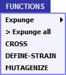

|
Where to get functions and strains for the simulation
|
If you have entered ViroBIKE or PhAnToMe/BioBIKE and run the simulation file, then you
should have a BioBIKE screen in front of you containing a blue FUNCTIONS button at the top.
If you have not, then go to How to Get to the Simulation
and then come back here when you've gotten there.
If you mouse over the FUNCTIONS button, you'll see the special functions available
to you for the simulation (shown at right). To use a function, click its name on the FUNCTIONS menu,
and fill in the entry boxes in the function that comes down into your work space.
Similarly, you have a list of strains available to you, under the VARIABLES button.
|

|
Steps in doing the simulation
A. Obtain suppressor mutants
- Use the MUTAGENIZE function
to obtain mutants of strain FC0 (availabile from the VARIABLES button) that are R+, i.e. able to form
plaques on E. coli K12. Almost all of these should be the result of suppressor mutations.
- Use the DEFINE-STRAIN function to
grow up and name phage strains from the plaques of the previous step.
- Use the CROSS function to
separate the suppressor mutations in your new strains from the mutation found in FC0.
You can do this by crossing each of your new strains against the wild-type strain, all available
from the VARIABLES button. Recombinants should differ from either parent (your new strain and wild-type)
by having an R- phenotype and therefore forming large plaques on E. coli B.
- Use the DEFINE-STRAIN function to
grow up and name phage strains from the plaques of the previous step.
- Use the CROSS function to determine which
of the new recombinants are phage carrying the FC0 mutation (hence redundant) or the new mutation made in
Step A.1. You can do this by crossing the strains from Step 4 against FC0 to see if it is possible to
obtain wild-type (R+) recombinants, most easily detected by plating on E. coli K12.
B. Map the new mutations
- Use the CROSS function to
determine the frequency of recombination for each mutant crossed with reference mutants (available
from the VARIABLES button). The frequency of R+ recombinants when the cross is plated on E. coli K12 should be proportional to
the distance between the mutations in the two strains. The positions of the mutations in the reference mutants sp-131 and FC30 are shown
roughly below, and further information can be gained from Crick et al (1961) [1], Benzer (1961) [9], and Shinedling et al (1987) [10].

- You might want to repeat step B.1 with a different standard mutant to get a more accurate map position
or if you're not sure on what side of the reference mutation the unknown mutation lies.
C. Construct mutants with multiple mutations
- Use the CROSS function to
recombine mutations of the same sign from mutants with different mutations of that sign. This is
somewhat tedious, because the two parental strains will be R-, and the strain you're looking for
may also be R-. You will need to test many plaques. To minimize the number you need to test, choose
parental mutants whose mutations are as far away from each other as possible.
- Use the DEFINE-STRAIN function to
grow up and name phage strains from the plaques of the previous step.
- Use the CROSS function to
test whether the new strain carries mutations from both phage parents. You can do this by performing
two crosses with each new strain: new strain vs parent 1 and new strain vs parent 2. If the new strain
carries both mutations, then both crosses should yield no wild-type (R+) recombinants when plated on
E. coli K12.
|